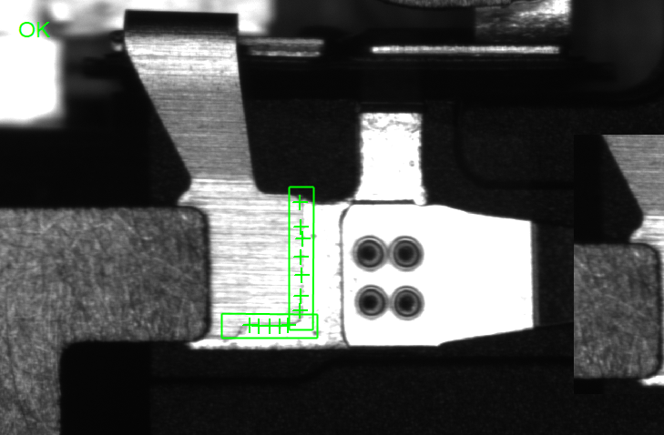

该工具为Slam项目定制工具，只对特定图像有作用，主要具备以下功能：

| 分类 | 参数名称 | 参数描述 |
|---|---|---|
| 属性窗口 | 模式类型 | 可选：仅检测、仅识别、检测和识别。 |
| 是否启用ROI | 是否启用ROI，若为否，则为全图匹配识别（只有选择仅识别时候有效）。 | |
| 检测阈值 | 检测阈值，用于滤除分数较低检测框，取值范围为(0.0,1.0]的浮点数。 | |
| 识别阈值 | 识别关键点阈值，用于滤除分数较低的识别结果，取值范围为(0.0,1.0]的浮点数。 | |
| 垂直关键点个数 | 用于拟合垂直矩形框的点个数，取值范围为[0,50]的整数。 | |
| 检测区域1-X边长 | 拟合的第一个矩形X边长，取值范围为[0,500]的浮点数。 | |
| 检测区域1-Y边长 | 拟合的第一个矩形Y边长，取值范围为[0,100]的浮点数。 | |
| 检测区域2-X边长 | 拟合的第二个矩形X边长，取值范围为[0,500]的浮点数。 | |
| 检测区域2-Y边长 | 拟合的第二个矩形Y边长，取值范围为[0,100]的浮点数。 | |
| 数据链 | 输入图像 | 用来实时识别的输入图像，只支持灰度图像。 |
| 二维线性变换 | 输入的定位二维线性变换结果，以根据其变换相应的识别区域 |
| 分类 | 参数名称 | 参数描述 |
|---|---|---|
| 输出窗口 | 输入图像 | 输入图像宽度、高度、像素大小。 |
| 检测整体位置矩形 | 选择仅检测、检测和识别模式时候有效，为定位得到的所有检测框矩形。 | |
| 识别矩形区域 | 选择识别模式时候有效，为识别过程中得到的所有文本框矩形。 | |
| 检测区域1 | 拟合得到的第一个矩形 | |
| 检测区域2 | 拟合得到的第二个矩形 | |
| 关键点 | 识别得到的关键点 | |
| 关键点得分 | 识别得到的关键点的得分 | |
| 执行结果 | 工具执行结果。 | |
| 执行时间 | 工具执行时间。 | |
| 数据链 | 检测区域1 | 拟合得到的第一个矩形 |
| 检测区域2 | 拟合得到的第二个矩形 |
此工具由于使用深度学习方法进行识别，所以需要载入训练好的模型，会增加一些耗时，具体体现在：
新增工具后的第一次执行中。
加载包含该工具工程的时候。
当选择仅识别模式时候，需要启用ROI
参见“\Samples\关键点检测工具.gvp”。